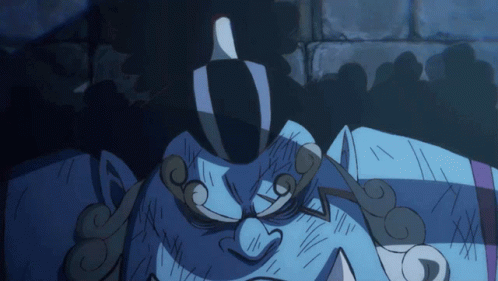
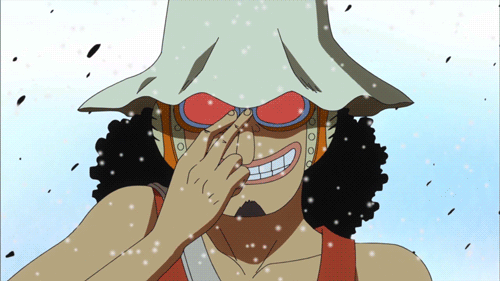
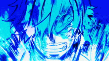
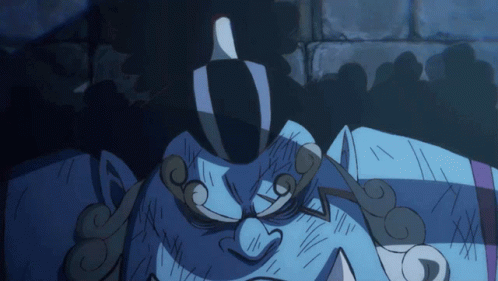
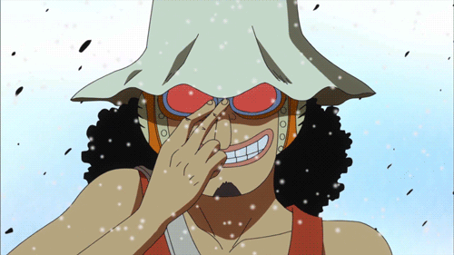
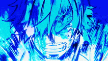
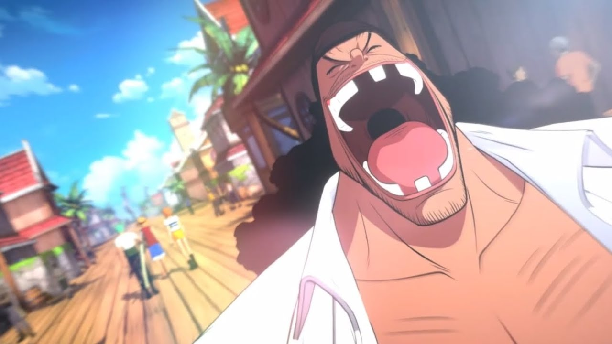

ROMANCE DAWN
Monkey D. Luffy sets out on an adventure to form a crew, find the legendary One Piece, and become the pirate king.
ORANGE TOWN
Luffy and Zoro run afoul of a flashy crew of pirates and their captain, Buggy the Clown. They are joined by a young girl named Nami who helps them navigate this predicament.
SYRUP VILLAGE
to be updated...
GAIMON

With Usopp now on the crew and their new ship, the Going Merry, under their command, the Straw Hats head to an island said to hold a fabled treasure. There they encounter a strange man stuck in a box who has been looking for the same treasure.
BARATIE
The Straw Hats head to the ocean-going restaurant, Baratie, with the hopes of recruiting one of their cooks. In the meantime, hungry yet powerful forces gather to lay siege to the restaurant — all while a menacing swordsman from the Grand Line steadily approaches.
ARLONG PARK
Nami's hometown has long been overrun by Arlong and his band of fishmen from the Grand Line. When the Straw Hats arrive, they find that their prospective navigator has left out a few key details about herself.
LOGUETOWN
The final island before entering the Grand Line: Loguetown. Luffy and his crew drop anchor to stock up, sightsee, and pay their respects to the place where Gold Roger drew his last breath.
REVERSE MOUNTAIN
Reverse Mountain is the entrance to the Grand Line. What await the Straw Hats are impossible water currents, a giant whale, and dubious people going by codenames.
WHISKY PEAK
The first island on the Grand Line is surprisingly welcoming to pirates. But as night falls, a deadly plot unravels.
LITTLE GARDEN
The Straw Hats vow to bring Princess Vivi to Arabasta, and their journey brings them to Little Garden, an island from prehistoria that is home to creatures and people larger than life.
DRUM ISLAND
When Nami falls ill, the crew makes a detour from Arabasta to seek medical help. They happen upon a winter island inhabited by a distrusting populace and a single doctor with a mysterious reindeer companion.
ALABASTA
Arabasta teeters on the edge of civil war, and it's up to Princess Vivi and the Straw Hats to stem the rebellion, uncover the plot of Baroque Works, and beat the Warlord Crocodile.
JAYA
The Straw Hats seek the fabled sky island Skypiea and head to Jaya for information on its whereabouts. Their convictions are tested by the pirates of Mock Town, but not everyone on the island is a hardline skeptic.
SKYPIEA
Arriving at Skypiea, the Straw Hats are instantly met with unfamiliar sights, objects, and customs. What's more, the god of the sky island deems the Blue Sea dwellers to be trespassing and casts his judgment upon them.
LONG RING LONG ISLAND
On Long Ring Long Land, the Straw Hats are challenged to a Davy Back Fight. As they dive headfirst into a series of games with serious outcomes, the best the Navy has to offer has meanwhile begun to pay closer attention to certain Straw Hat crewmembers.
WATER SEVEN
The Straw Hats make landfall at the glorious city of Water Seven, known worldwide for its unparalleled shipyards. The pirates go to inquire about repairs for their ship, but the city threatens to take their money, their ship, and their crewmates.
ENIES LOBBY
In order to free Nico Robin from the clutches of the World Government, the Straw Hats and their allies must invade the judicial island, Enies Lobby, and take on the government's premiere clandestine unit: CP9.
THRILLER BARK
The Straw Hats' next destination is Fishman Island, but first they must traverse the dreaded Florian Triangle which is known for many eerie and mysterious things such as disappearing crews, conversational skeletons, and a floating island full of zombies and other horrors.
SABAODY ARCHIPELAGO
The second half of the Grand Line lays just ahead, so the Straw Hats stop at Sabaody Archipelago to plan the way forward. But being so close to the Holy Land and Navy Headquarters, Luffy's crew comes face-to-face with the darkest forces of the World Government.
AMAZON LILY
Luffy is separated from his crew, and he finds himself on an unfamiliar island in the middle of the Calm Belt... an island inhabited only by women where men are prohibited from entering.
IMPEL DOWN
Luffy launches a daring rescue mission to break his big brother Ace from the government prison, Impel Down. It's a race to the prison's lowest levels — a literal journey through hell itself.
IF YOU COULD GO ANYWHERE....

Somewhere in the world... Sanji resists, while Robin meets terrible people. Franky's not himself, and Usopp learns to survive. Chopper avoids becoming food, and Nami reports on the weather. Brook is repaid in underpants, and Zoro... is lost and annoyed.
MARINEFORD

Pirate Whitebeard and his allies on one side; the Navy and its Seven Warlords on the other. At the center of it all: Portgas D. Ace and his unspeakable past and heritage. Luffy races to Ace's execution scaffold as a battle between the world's most powerful people unfolds.
POST-WAR
The war has taken its toll on the world, and Luffy reminisces about younger days when he first met Ace and became his brother. To become strong enough to withstand the New World, Luffy must make a critical decision for himself and his crew.
DRESSROSA

On Dressrosa, the Straw Hats battle Doflamingo’s tyranny, forging alliances and uncovering ancient secrets of the world.
RETURN TO SABAODY (3D 2Y)
Two years have passed since the Straw Hats were forcibly separated, and they reconvene back at Sabaody stronger and even more committed to the journey ahead.
FISHMAN ISLAND
The path the to the New World takes the Straw Hats thousands of leagues under the sea to the underwater Fishman Island. However, the island's dark past is reaching a breaking point, and Luffy and his crew are caught in the middle of the conflict.
PUNK HAZARD
The first island of the New World is a strange place covered in flames on one half, and freezing temperatures on the other. What seems at first to be an unlivable place later reveals a laboratory, a maniac scientist, and a certain Warlord of the Sea.
DRESSROSA
Luffy's alliance with Law brings him next to Dressrosa to take down Doflamingo's booming business. But the crazed warlord and self-proclaimed ruler of Dressrosa has control over everyone and everything.
ZOU
Zou cannot be reached by conventional means, nor is it easy to enter once one finds it. Within its secretive walls lie the Mink Tribe, and the Straw Hats soon discover that the people of Zou hold a piece of the puzzle that unlocks the mysteries of the world.
WHOLE CAKE ISLAND

Luffy will not sail the seas without his cook, so he stubbornly goes after Sanji to Whole Cake Island. However, knocking on an emperor's door is easier said than done.
REVERIE
Every four years, the leaders of the world gather at the Holy Land to discuss a mutually agreed upon path for the government. During this particular Reverie, many parties with their own agendas arrive... and some are uninvited.
WANO

The Straw Hats finally regroup in Wano to carry out theirs and their allies' ultimate goal: to see to the Emperor Kaido's downfall and restore the Kozuki family to its rightful place of power.
EGGHEAD
Futuristic tech, giant alien monsters, battle robots, superhuman clones... Who are all these people calling themselves Dr. Vegapunk, and why is the government after one of their own?